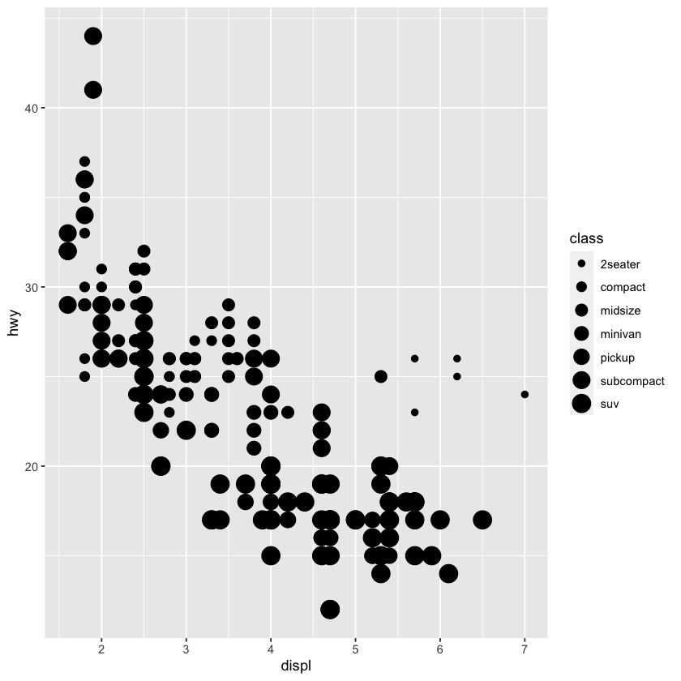

ggplot a
aes, facet_, geom_, mapping, filter
aes안의 option
- color

- size
Warning message:
“Using size for a discrete variable is not advised.”
- alpha
Warning message:
“Using alpha for a discrete variable is not advised.”- shape
Warning message:
“The shape palette can deal with a maximum of 6 discrete values because
more than 6 becomes difficult to discriminate; you have 7. Consider
specifying shapes manually if you must have them.”
Warning message:
“Removed 62 rows containing missing values (geom_point).”
한번에 여러개 보이기
facet_wrap
- 차 종류(class)에 따라 나눈 모습
nrow = 줄 개수
facet_grid
- facet grid에 적은 항목들의 결과 plot 보여줌.

| manufacturer | model | displ | year | cyl | trans | drv | cty | hwy | fl | class |
|---|---|---|---|---|---|---|---|---|---|---|
| <chr> | <chr> | <dbl> | <int> | <int> | <chr> | <chr> | <int> | <int> | <chr> | <chr> |
| audi | a4 | 1.8 | 1999 | 4 | auto(l5) | f | 18 | 29 | p | compact |
| audi | a4 | 1.8 | 1999 | 4 | manual(m5) | f | 21 | 29 | p | compact |
| audi | a4 | 2.0 | 2008 | 4 | manual(m6) | f | 20 | 31 | p | compact |
| audi | a4 | 2.0 | 2008 | 4 | auto(av) | f | 21 | 30 | p | compact |
| audi | a4 | 2.8 | 1999 | 6 | auto(l5) | f | 16 | 26 | p | compact |
| audi | a4 | 2.8 | 1999 | 6 | manual(m5) | f | 18 | 26 | p | compact |
- 열이나 행으로 면분할 하고싶지 않다면 변수이름 대신
.사용
아래는 cyl에 대한 내용만 나온 모습

geom_옵션들
geom_smooth
- 데이터에 적합된 평활선
`geom_smooth()` using method = 'loess' and formula 'y ~ x'
- line자체의 shape은 선택 불가지만, line type은 선택 해줄 수 있음.
`geom_smooth()` using method = 'loess' and formula 'y ~ x'
- 오히려 구별 잘 안되는 듯
`geom_smooth()` using method = 'loess' and formula 'y ~ x'
- 색깔 입히기 가능
`geom_smooth()` using method = 'loess' and formula 'y ~ x'
- 위에 나온 옵션 다 합쳐서 그리기
geom_bar

mapping
- ggplot안에
mapping해 놓으면 뒤에서 또 x = ~ 이런 거 안 써도 됨.
`geom_smooth()` using method = 'loess' and formula 'y ~ x'
mapping해 놓고 옵션추가 하고 싶다면 해당geom에 가서 그 부분만mapping하고 옵션주면 된다.
나머지는 그대로 작동
filter
- 특정 항목에 한해서만
smooth하기위해filter사용
se = FALSE하면 그림자 꺼짐
ggplot(data = mpg, mapping = aes(x = displ, y = hwy)) +
geom_point(mapping = aes(color = class)) +
geom_smooth(
data = filter(mpg, class == 'subcompact'),
se = FALSE
)`geom_smooth()` using method = 'loess' and formula 'y ~ x'

geom_bar와 똑같이 나옴

- 이것을 보면
geom_bar의 y축의 default값이stat_count임을 알 수 있다
이 stat을 다른 값을 주면 y축 종류를 바꿀 수 있음
- 다이아 예제를 위한 데이터 셋
demo <- tribble(
~cut, ~freq,
"Fair", 1610,
"Good", 4906,
"Very Good", 12082,
"Premium", 13791,
"Ideal", 21551
)
demo| cut | freq |
|---|---|
| <chr> | <dbl> |
| Fair | 1610 |
| Good | 4906 |
| Very Good | 12082 |
| Premium | 13791 |
| Ideal | 21551 |
- 위의 데이터 셋에 geom_bar를 사용, 언급한대로 stat을 다른 값을 주니 y축이 count에서 frequncy로 바뀜.

prop: 비율로 표시하기

stat_summary
ggplot(data = diamonds) +
stat_summary(
mapping = aes(x = cut, y = depth),
fun.ymin = min,
fun.ymax = max,
fun.y = median
)Warning message:
“`fun.y` is deprecated. Use `fun` instead.”
Warning message:
“`fun.ymin` is deprecated. Use `fun.min` instead.”
Warning message:
“`fun.ymax` is deprecated. Use `fun.max` instead.”
geom_bar에서 color 사용시 막대그래프의 테두리 색 선택
geom_bar에서 fill 사용시 막대그래프 자체 색 선택
fill(aes 옵션)
ggplot(data = diamonds) +
geom_bar(mapping = aes(x= cut, color = cut))
ggplot(data = diamonds) +
geom_bar(mapping = aes(x= cut, fill = cut))

- 다른 변수 추가해서 각각 얼마나 차지하는지 보이기
- SI2
- SI1
- VS1
- VS2
- VVS2
- VVS1
- I1
- IF
Levels:
- 'I1'
- 'SI2'
- 'SI1'
- 'VS2'
- 'VS1'
- 'VVS2'
- 'VVS1'
- 'IF'
position = 'identity' : 각 객체를 그래프 문맥에 해당되는 곳에 정확히 배치한다.
다만, 막대그래프에서는 그리 유용하지 않음
ggplot(
data = diamonds,
mapping = aes(x = cut, fill = clarity)
)+
geom_bar(alpha = 0.3, position = 'identity')- 테두리만 색입히고 막대를 빈공간으로 만드는 것도 가능
ggplot(
data = diamonds,
mapping = aes(x = cut, color = clarity)
)+
geom_bar(fill = NA, position = 'identity')
position = 'fill' : 누적 막대인데 막대 높이를 동일하게 맞춤
비율 비교에 용이

position = 'dodge' : 옆으로 쌓기
개별 값들의 비교 용이

jitter
position = 'jitter' : 중복된 값 진하게 표시

coord_flip() : x축 y축 변경
ggplot안의 지도
| long | lat | group | order | region | subregion | |
|---|---|---|---|---|---|---|
| <dbl> | <dbl> | <dbl> | <int> | <chr> | <chr> | |
| 1 | 172.7433 | -34.44215 | 1 | 1 | North.Island | NA |
| 2 | 172.7983 | -34.45562 | 1 | 2 | North.Island | NA |
| 3 | 172.8528 | -34.44846 | 1 | 3 | North.Island | NA |
| 4 | 172.8986 | -34.41786 | 1 | 4 | North.Island | NA |
| 5 | 172.9593 | -34.42503 | 1 | 5 | North.Island | NA |
| 6 | 173.0184 | -34.39895 | 1 | 6 | North.Island | NA |
coord_quickmap(): 지도에 맞게 가로세로 비율 설정
공간 데이터 plot에서 중요
ggplot(nz, aes(long, lat, group = group)) +
geom_polygon(fill = 'white', color = 'black') +
coord_quickmap()labs : NULL하면 x축이나 y축 이름 안보이게 함
theme(aspect.ratio) : 1이면 정사각형 모양, 그 이상은 세로 길어짐, 이하는 가로가 길어짐
width : 막대 뚱뚱한 정도
show.legend : 범주 표기 여부
bar <- ggplot(data = diamonds) +
geom_bar(
mapping = aes(x = cut, fill = cut),
show.legend = FALSE,
width = 1
) +
theme(aspect.ratio = 1)+
labs(x = NULL, y = NULL)
bar + coord_flip()
coord_polar(): pie 차트로 변경